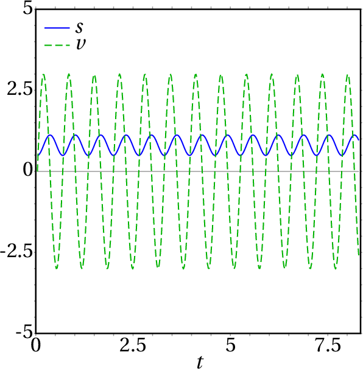
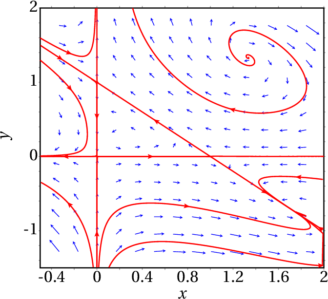
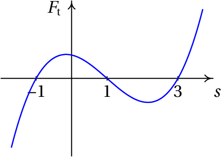
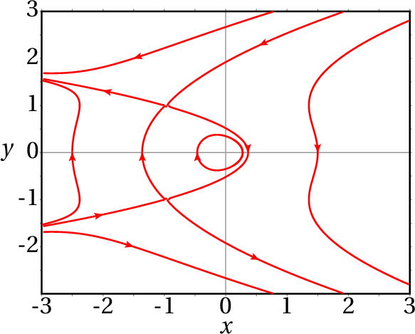
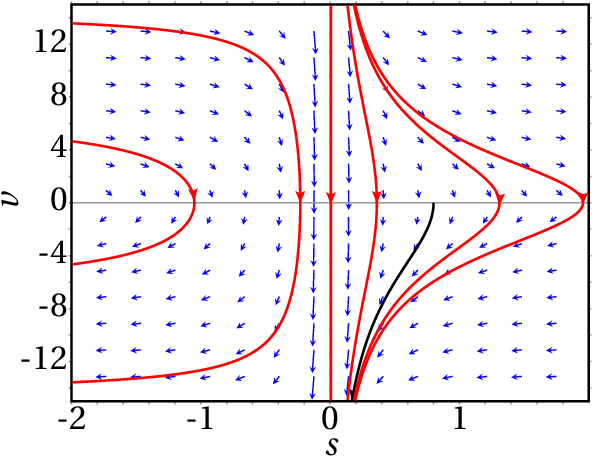
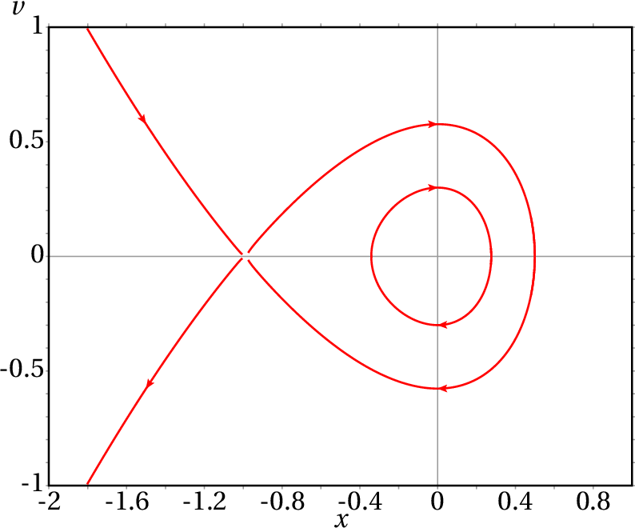
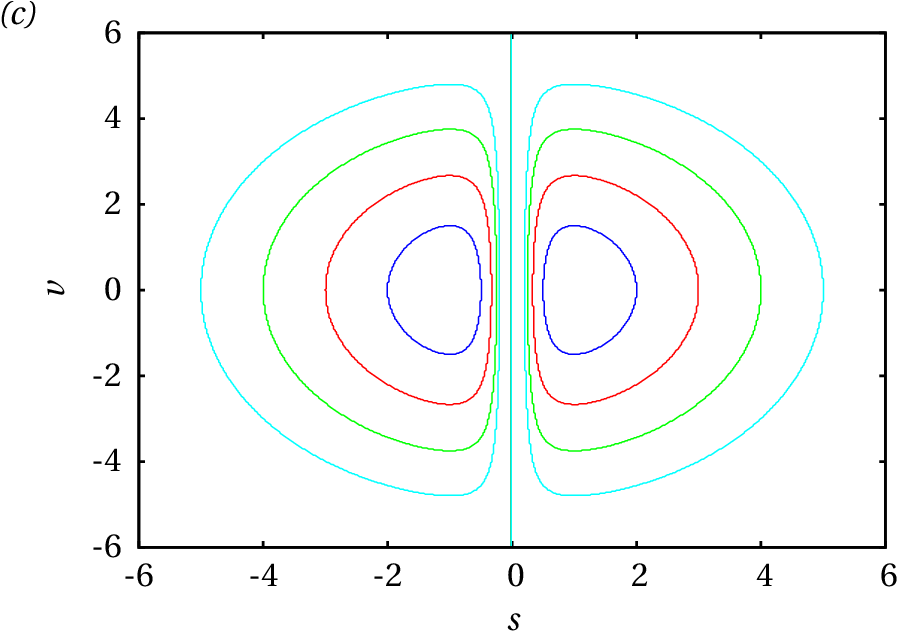
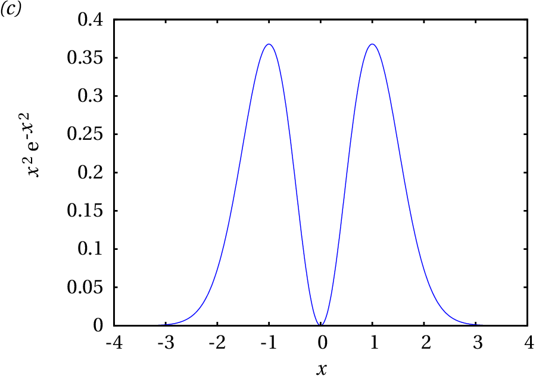

No estudo de um sistema dinâmico é importante determinar a existência
de posições de equilíbrio. Os acrobatas na fotografia encontram-se
numa situação de equilíbrio estável: se a bicicleta se inclinar
lateralmente, o peso do acrobata pendurado por baixo faz com que o
sistema se incline no sentido oposto, regressando à posição de
equilíbrio. Se o acrobata na bicicleta não tivesse o segundo acrobata
pendurado, a sua situação de equilíbrio seria instável: se a bicicleta
se inclinasse lateralmente, o seu peso mais o do acrobata faziam
aumentar ainda mais a inclinação, afastando a bicicleta da posição de
equilíbrio.
7.1. Equações diferenciais
As equações cinemáticas são equações
diferenciais ordinárias. Uma
equação diferencial ordinária —ou de forma abreviada, EDO— é
qualquer expressão que relaciona uma função, por exemplo
e as
suas derivadas:
,
, etc. Por exemplo:
; neste caso
é a variável independente e
a variável que depende de
. Muitos problemas de ciência e
engenharia conduzem a equações diferenciais ordinárias que é necessário
resolver para encontrar a função, no exemplo anterior
. Existem
equações que aparecem em diversas áreas diferentes; por exemplo, a
equação do oscilador harmónico simples analisada no capítulo 6 é da
forma geral
, onde
é uma constante positiva; nos
problemas de outras áreas científicas em que aparecem equações
similares, o comportamento do sistema pode ser analisado por analogia
com o movimento de um corpo ligado a uma mola elástica.
7.1.1. Equações de primeira ordem
Uma EDO é de primeira ordem se a única derivada que aparece na equação
é de primeira ordem. Se a variável independente é
e a variável
dependente
, esse tipo de equações podem ser escritas na forma geral
(7.1)
onde
é uma expressão com
e
. Todas as equações
diferenciais que foram resolvidas no capítulo 1, pelo método de
separação de variáveis, são dessa forma. Mas existem outras equações
de primeira ordem que não podem ser resolvidas por esse método; por
exemplo, na equação
não é possível separar as
variáveis
e
.
Uma EDO admite muitas soluções diferentes, que dependem dos valores
iniciais (
,
). Nos exemplos resolvidos no capítulo 1, para
diferentes limites de integração obtinham-se diferentes soluções.
Uma EDO de primeira ordem com a forma geral
diz-se
autónoma, porque a variável
independente
não aparece explicitamente no lado direito. Nesse
caso, a solução
é ainda uma função do tempo mas acontece que as
funções obtidas com as condições iniciais (
,
), (
,
), (
,
), etc. são a mesma função mas deslocada no eixo
dos
. Diz-se que a forma como o sistema "evolui" a partir do
valor inicial
é igual, independentemente do instante em que o
sistema começa a evoluir.
Em termos físicos, um sistema autónomo é um sistema que é regido
sempre pelas mesmas leis físicas: a altura
de um corpo em queda
livre desde um ponto com altura
diminui sempre da mesma forma,
em quanto não mude o valor de
ou deixe de existir atração
gravitacional.
7.2. Sistemas de equações diferenciais autónomas
Considere-se agora o caso em que existem duas funções independentes
e
, que dependem do tempo e que são definidas por
duas equações diferenciais autónomas de primeira ordem:
(7.2)
Por exemplo, o sistema:
(7.3)
Pretende-se encontrar as funções
e
a partir de
valores conhecidos de
e
num instante inicial
. Pode visualizar-se o problema num gráfico em que se colocam
e
em dois eixos perpendiculares, tal como na
figura 7.1. Dois valores iniciais
e
,
num instante inicial, definem um ponto nesse plano e nos instantes
seguintes os valores de
e
mudam, fazendo com que o
ponto se desloque no plano ao longo de uma curva.
Figura 7.1: Espaço de fase de um sistema autónomo com duas variáveis.
O plano com os eixos
e
chama-se
espaço de fase e em cada
instante
, o ponto do espaço de fase definido pelas coordenadas
(
,
) denomina-se o estado do
sistema nesse instante. As duas variáveis
e
são as
variáveis de estado e a curva
representada na figura 7.1, que mostra a variação das
variáveis de estado a partir de um estado inicial, é uma
curva de evolução do sistema.
Qualquer ponto do espaço de fase pode ser o estado inicial do sistema
(
,
). Os valores de
e
nesse ponto estão bem definidos e determinam como
aumentam as variáveis de estado
e
nesse ponto. A expressão
, derivada de
em ordem ao tempo, dá o aumento de
por
unidade de tempo; ou seja, o deslocamento da projeção do estado do
sistema no eixo
, por unidade de tempo; de forma análoga,
dá o deslocamento da projeção do estado do sistema no eixo
, por
unidade de tempo.
Assim sendo, o vetor:
(7.4)
define o deslocamento do estado do sistema no espaço de fase, por
unidade de tempo e, por isso, chama-se velocidade de fase. Os
lados direitos equações diferenciais 7.2 denominadas
equações de evolução do sistema, definem a velocidade de fase
em qualquer ponto do espaço de fase. Por exemplo, a expressão para a
velocidade de fase do sistema definido pelas equações de
evolução 7.3 é:
O estado inicial (
,
) no instante
desloca-se
no espaço de fase com a velocidade de fase
; num
instante posterior
, a velocidade de fase
poderá
ser outro vetor diferente que faz deslocar o estado em outra direção e
com outra velocidade. Assim sendo, a evolução do estado do sistema em
função do tempo é definida por uma curva contínua no espaço de fase,
que parte do estado inicial (
,
). Em cada ponto do
espaço de fase em que as funções
e
estão definidas passa
uma curva de evolução do sistema.
Em cada ponto do espaço de fase, a velocidade de fase
é
tangente à curva de evolução que passa por esse ponto. Duas curvas de
evolução diferentes nunca se podem cruzar em nenhum ponto no domínio
das funções
e
, porque no ponto em que se cruzassem
existiriam duas velocidades de fase diferentes, que não é possível.
7.2.1. Campos de direções
É possível ter uma ideia de como é a evolução de um sistema dinâmico
no tempo, sem ter de resolver as equações diferenciais 7.2. A
figura 7.2 mostra a direção da velocidade de fase em vários
pontos do espaço de fase, para um exemplo concreto. Esse tipo de
gráfico chama-se
campo de direções.
Figura 7.2: Campo de direções de um sistema dinâmico e uma curva de evolução.
Observando o campo de direções consegue-se prever como será a curva de
evolução a partir de um estado inicial num instante
. Por
exemplo, na
figura 7.2 mostra-se uma das possíveis curvas de
evolução do sistema, a partir do estado inicial P, com
e
. Também é possível ver a evolução anterior do sistema em
que o levou a ficar com o estado inicial P em
. A
figura mostra que o sistema passou pelo estado O antes de alcançar o
estado P.
A curva mostra que a variável
, inicialmente positiva em O,
diminui em função de tempo tornando-se negativa, até alcançar um valor
mínimo e logo começa a aumentar ficando novamente positiva. A variável
aumenta desde um valor inicial negativo e quando
se
aproxima de zero, diminui ligeiramente, começando a aumentar novamente
enquanto
permanece negativa, ficando igual a zero no instante em
que
tem o seu valor mínimo; quando
volta a ficar positiva,
diminui ligeiramente, começando novamente a aumentar.
7.2.2. Equações diferenciais de segunda ordem
A forma geral de uma equação diferencial autónoma de segunda ordem é:
(7.5)
que pode ser reduzida a duas equações de evolução de um sistema
dinâmico com duas variáveis de estado. Basta considerar a primeira
derivada
como uma outra variável
que também depende do
tempo e, assim sendo, a segunda derivada
é igual a
e a equação diferencial fica
, que é uma
equação de primeira ordem; mas como esta nova equação tem duas
variáveis independentes, será necessária uma segunda equação que é a
própria definição da nova variável introduzida:
; ou seja,
a equação inicial é equivalente ao sistema de duas equações:
(7.6)
Estas duas equações definem um sistema dinâmico com variáveis de
estado
e
, e velocidade de fase
(7.7)
Nos sistemas mecânicos, a segunda lei de Newton permite encontrar a
equação de movimento: expressão para a aceleração. Como a aceleração é
a segunda derivada da posição, a equação de movimento é uma equação
diferencial de segunda ordem. Define-se como variável adicional a
velocidade, que é a primeira derivada da posição e, como tal, o espaço
de fase é formado pelas variáveis de posição e de velocidade. O estado
do sistema em cada instante é definido pela posição e a velocidade.
Exemplo 7.1
Uma partícula com massa de 0.5 kg desloca-se ao longo de um
carril, sob a ação de uma força com componente tangencial
, onde
é a posição ao longo do
carril (unidades SI). (a) Escreva as equações de evolução do
sistema e identifique as variáveis de estado. (b) Trace o campo
de direções para valores de
no intervalo [−4, 8] e valores de
no intervalo [−30, 30]. (c) Num instante inicial a
partícula encontra-se na posição
, com velocidade
m/s. Represente a curva de evolução da partícula no espaço de
fase.
Resolução. (a) A aceleração tangencial
é
igual à componente tangencial da força dividida pela massa:
esta equação de movimento é equivalente às seguintes equações de
evolução de um sistema dinâmico:
As variáveis de estado são a posição na trajetória,
, e a
velocidade
.
(b) e (c) A velocidade de fase é o vetor:
No Maxima, o campo de direções pode ser feito com o comando
plotdf. Os dois primeiros argumentos que
devem ser dados a esse comando são uma lista com as componentes da
velocidade de fase e outra lista com os nomes das variáveis de
estado. A seguir define-se o domínio de valores das variáveis de
estado. Para traçar a curva de evolução que passa pelo estado inicial
e
, usa-se a opção
trajectory_at:
Os vetores que representam a velocidade de fase não foram desenhados
com o seu verdadeiro comprimento, para evitar que se cruzem, mas foram
ajustados de forma a ficar com tamanho ligeiramente menor que a
distância entre os pontos da quadrícula em que são desenhados os
vetores.
A curva de evolução da partícula a partir de
mostra que a
partícula avança na direção em que
aumenta, acelerando até uma
velocidade máxima aproximadamente
, começa logo a brandar até
parar (
), aproximadamente em
, começa a acelerar
novamente, mas agora no sentido em que
diminui (
negativa) até
uma velocidade mínima aproximadamente
, até parar novamente
aproximadamente em
. Nesse ponto o ciclo repete-se
indefinidamente.
7.2.3. Retratos de fase
O campo de direções fornece muita informação importante sobre o
sistema. No exemplo apresentado na figura 7.3, as condições
iniciais dadas conduzem a um movimento oscilatório à volta da posição
. Pode ver-se na figura que, se a velocidade inicial fosse maior,
ou se a partícula partisse de uma posição inicial com
, a
oscilação seria até valores de
menores que
. Também pode
ver-se que existem outras oscilações (curvas de evolução fechadas) à
volta de
.
Um gráfico mais completo, mostrando várias curvas de evolução que
ajudem a descrever os possíveis tipos de soluções do sistema, chama-se
retrato de fase do sistema.
O campo de direções ajuda também a compreender como funcionam os
métodos numéricos para resolver sistemas de equações
diferenciais. Dado um ponto inicial no espaço de fase e expressões que
definem a velocidade de fase em cada ponto do espaço de fase, cria-se
uma sequência de pontos em que cada ponto segue o anterior na direção
definida pela velocidade de fase média entre esses dois pontos
—consulte o capítulo de equações diferenciais do livro "Métodos
Numéricos" (Villate, 2014). A opção trajectory_at do comando
plotdf que foi usada no exemplo acima faz com que o sistema de
equações diferenciais seja resolvido numericamente, com condições
iniciais dadas pelas coordenadas do ponto inicial e a solução é
representada no mesmo gráfico do campo de direções.
Conforme já foi referido, o primeiro argumento que deve ser dado ao
programa plotdf é uma lista com as expressões que definem as
duas componentes da velocidade de fase, ou seja, as derivadas das duas
variáveis de estado. Cada uma dessas expressões pode depender
unicamente das duas variáveis de estado. A seguir a essa lista
escreve-se outra lista com os nomes das duas variáveis de estado, na
mesma ordem que foi usada para escrever as suas derivadas na primeira
lista. Há várias opções adicionais que podem ser usadas; a lista
completa pode ser consultada no capítulo sobre métodos numéricos no
manual do Maxima.
O programa plotdf abre uma nova janela com o campo de direções,
como a que se mostra na figura 7.4, para o exemplo da secção
anterior. Deslocando o rato sobre o espaço de fase, aparecem no canto
inferior direito as coordenadas do ponto onde está o
ponteiro. Clicando no primeiro botão do rato sobre algum ponto no
gráfico, aparece a curva de evolução que passa por esse ponto, com uma
seta que indica o sentido de evolução.
Figura 7.4: Menus Config e Save
do programa plotdf.
A barra de menu da janela gráfica inclui vários botões. Os botões com
os sinais + e - permitem aumenta ou diminuir o tamanho do gráfico. O
botão com um disco permite gravar uma cópia do gráfico num ficheiro,
em formato Postscript. O botão do lado direito, com um pequeno
gráfico, abre uma nova janela mostrando os gráficos das duas variáveis
de estado em função do tempo, correspondentes à última curva de
evolução que tenha sido traçada.
O botão com uma chave de fendas abre o menu "Plot SetUp"
(figura 7.4) que mostra vários parâmetros que podem ser
alterados: as equações que definem as componentes da velocidade de
fase, as cores usadas para os vetores da velocidade de fase
(vectors) e as curvas de evolução (fieldlines), o
domínio, etc.
Se o campo vectors é deixado em
branco, não são traçados os vetores do campo de direções e
se o campo fieldlines está em
branco, não são traçadas curvas de evolução. Quando se altera um
parâmetro, é necessário selecionar "ok" e a seguir "Replot" (botão
com setas a rodarem) para atualizar o gráfico.
O campo direction tem, por omissão, o
valor both, que implica que quando se clica num ponto, aparece
a curva de evolução que passa por esse ponto, para instantes
anteriores e posteriores. Mudando essa variável para
forward ou
backward, consegue-se que a curva seja
traçada unicamente para instantes posteriores ou anteriores.
Introduzindo duas coordenadas no campo Trajectory at, separadas
por espaço e carregando na tecla Enter, acrescenta-se mais uma
curva que passa pelo ponto com essas coordenadas.
7.3. Pontos de equilíbrio
Em cada ponto do espaço de fase, a velocidade de fase indica a direção
e sentido que segue a curva de evolução que passa por esse ponto. Nos
pontos onde a velocidade de fase é nula, não existe nenhuma curva que
passe por esse ponto. Nesse caso o estado da partícula permanece
constante nesse ponto, que é chamado
ponto de equilíbrio.
Exemplo 7.2
Encontre os pontos de equilíbrio do sistema dinâmico
Resolução. Como vão ser usados em vários comandos, comecemos por
armazenar as duas expressões dos lados direitos das equações de evolução
em duas variáveis
(%i2)f1:4-x1^2-4*x2^2$ (%i3)f2: x2^2-x1^2+1$
a seguir, usa-se o comando solve para
encontrar os pontos de equilíbrio que é onde as duas expressões são
iguais a zero
Chama-se nulclina da primeira variável à curva
onde
é nula, que neste caso é a elipse
, e
as nulclinas da segunda variável são as duas partes da hipérbole
.
Os pontos de equilíbrio do sistema são os quatro pontos de interseção
entre a elipse e a hipérbole. Os gráficos dessas duas curvas podem ser
obtidos no Maxima usando a sintaxe para gráficos de funções implícitas
(em versões anteriores a 5.45, era necessário usar o programa
implicit_plot):
O resultado apresenta-se na figura 7.5. Dentro da elipse,
como
é positiva, a velocidade de fase aponta para a
direita; fora da elipse aponta para a esquerda. Na região à esquerda
da hipérbole, a velocidade de fase aponta para baixo, entre os dois
ramos da hipérbole aponta para cima e à direita da hipérbole aponta
para baixo.
Nos sistemas mecânicos em que as duas variáveis de estado são a posição
na trajetória
e a velocidade
, se as duas componentes da
velocidade de fase são nulas então a velocidade e a aceleração
tangencial são nulas. Isso implica que o sistema se encontra num estado
de equilíbrio estático,
em que a componente tangencial da força resultante e a velocidade são
nulas e o objeto permanece em repouso. Nesses sistemas, todos os
pontos no eixo das abcissas (eixo da variável
) no espaço de fase
correspondem a estados de repouso (
), mas não necessariamente
estados de equilíbrio (
). Os estados de equilíbrio do
sistema dinâmico são os pontos de equilíbrio estático, que estão todos
no eixo das abcissas (
) e nos quais a velocidade de fase é nula.
Nos pontos do eixo das abcissas onde a velocidade de fase não é nula,
o sistema permanece instantaneamente em repouso, retomando
imediatamente o seu movimento.
Um estado de equilíbrio cinético
é um estado em que a aceleração tangencial é nula mas o objeto
desloca-se com velocidade constante. No retrato de fase esses estados
de equilíbrio cinético são retas paralelas ao eixo da posição
.
Exemplo 7.3
Um objeto com massa 0.3 kg desloca-se sob a ação de uma força com
componente tangencial (unidades SI):
onde
é a posição ao longo da trajetória. (a) Encontre os
pontos de equilíbrio do sistema. (b) Represente o retrato de
fase do sistema.
Resolução. (a) Pode começar-se por armazenar a
expressão da força em função da posição:
(%i7)Ft: -s^4/2 + 4*s^3 - 3*s^2/2 - 32*s + 25$
Para encontrar os pontos de equilíbrio, onde a força tangencial é
nula, pode usar-se o comando realroots,
já que só interessam as raízes reais
(%i8)se: float (realroots (Ft));
(%o8)
Existem então 4 pontos de equilíbrio, todos com
e com os 4
valores de
no resultado (%o8). (b) Para construir o
retrato de fase, escolhe-se um domínio que mostre os quatro pontos de
equilíbrio, sem que fiquem muito próximos uns dos outros:
As curvas de evolução nas vizinhanças dos 2 pontos de equilíbrio em
e
são fechadas, com o ponto de equilíbrio no seu
interior. Nos outros dois pontos de equilíbrio,
e
,
há curvas de evolução que começam ou terminam no ponto (aproximam-se
assimptoticamente desse ponto nos limites
ou
). Nas duas próximas secções analisam-se com mais
pormenor esses tipos de curvas.
7.3.1. Equilíbrio estável e instável
Os pontos de equilíbrio em
e
no
exemplo 7.3 são pontos de
equilíbrio estável,
porque se o estado inicial do sistema estiver próximo desses pontos, o
sistema regressará ao esse estado inicial.
Os outros dois pontos de equilíbrio, em
e
, são
pontos de equilíbrio instável,
porque se o estado inicial do sistema estiver próximo desses pontos, o
sistema afastar-se-á desse estado inicial.
As componentes da velocidade de fase permitem descobrir os pontos de
equilíbrio. No caso dos sistemas mecânicos em que as variáveis de
estado são
e
, basta encontrar as raízes da força tangencial
(ou aceleração tangencial), em função da posição
, substituindo
. Nesses sistemas a expressão de
ou
, com
, permite identificar os pontos de equilíbrio
estável ou instável. A figura 7.7 mostra o gráfico da força
tangencial do exemplo 7.3.
Na figura 7.7, os pontos de equilíbrio
são
os pontos em que a curva corta o eixo
. Se nesses pontos
passa de um valor negativo para um valor positivo, quer
dizer que para
a força aponta no sentido negativo de
, fazendo diminuir
ou seja, afastando o sistema do ponto de
equilíbrio. Em
a força é no sentido positivo de
,
aumentando
e afastando também o sistema do ponto de
equilíbrio. Assim sendo, nesses pontos o equilíbrio é instável.
Nos pontos de equilíbrio
em que
passa de
um valor positivo para um valor negativo. A força faz aumentar
se
, ou diminuir se
. Ou seja, nesses
pontos o equilíbrio é estável.
Nos capítulos 9 e 10
explica-se um método geral para analisar a estabilidade dos pontos de
equilíbrio em sistemas dinâmicos mais gerais. O retrato de fase também
é sempre uma boa ajuda para analisar a estabilidade dos pontos de
equilíbrio.
7.3.2. Ciclos e órbitas
No exemplo 7.3 (figura 7.8) as curvas de evolução
nas vizinhanças dos pontos de equilíbrio estável, em
e
, são curvas fechadas à volta do ponto de equilíbrio. Cada
uma dessas curvas fechadas, designadas de
ciclos, implicam movimento oscilatório à volta
do ponto de equilíbrio.
Um ciclo é uma curva fechada no espaço de fase que corresponde a
uma oscilação periódica das variáveis de estado.
Figura 7.8: Retrato de fase do sistema do exemplo 7.3.
A figura 7.8 mostra as partes importantes no retrato de fase do
exemplo na figura 7.6. No ponto de equilíbrio instável em
há duas curvas de evolução que se aproximam assimptoticamente
desse ponto nos dois limites
e
; uma das curvas está ao lado esquerdo e a outra
ao lado direito do ponto. Nenhuma dessas duas curvas é realmente
fechada, porque o próprio ponto de equilíbrio não faz parte de nenhuma
das curvas. Cada uma dessas duas curvas chama-se
órbita homoclínica
e corresponde a um solitão: uma
oscilação não periódica, em que cada variável de estado aumenta (ou
diminui) afastando-se do valor de equilíbrio, mas volta a diminuir (ou
aumentar) aproximando-se novamente do valor de equilíbrio no limite
.
Uma órbita homoclínica é uma curva no espaço de fase que começa
e termina no mesmo ponto de equilíbrio. Representa uma oscilação não
períodica (solitão) do sistema.
No retrato de fase 7.8 existe também uma terceira órbita
homoclínica, que parte do ponto de equilíbrio instável em
,
contornando os dois pontos de equilíbrio estável em
e
e regressando ao ponto em
. Nesse exemplo, as órbitas
homoclínicas demarcam a fronteira das zonas de estabilidade: na
figura 7.8, as duas zonas mais escuras correspondem a
oscilações do sistema à volta de algum dos dois pontos de equilíbrio
estável. Na zona colorida com uma cor mais clara, o sistema oscila à
volta dos dois pontos de equilíbrio estável.
Dentro de um ciclo existe sempre algum ponto de equilíbrio. Em
capítulos seguintes serão estudados diferentes tipos de ciclos. Os
pontos de equilíbrio onde comece e termine uma órbita homoclínica têm
de ser, necessariamente, pontos de equilíbrio instável, porque há uma
direção em o estado do sistema afasta-se do ponto de equilíbrio.
Observe-se que nos ciclos o sistema passa repetidamente pelos mesmos
pontos no espaço de fase, enquanto que nas órbitas homoclínicas o
sistema nunca chega a passar duas vezes por um mesmo ponto do espaço
de fase.
O gráfico da posição
e velocidade
em função do tempo
(figuras 7.9 e 7.10) pode ser traçado usando-se a
opção versus_t do programa plotdf, ou com o botão do
menu.

Figura 7.9: Posição e velocidade em função do tempo no caso de um ciclo.
O gráfico da evolução das variáveis no caso do ciclo, apresentado na
figura 7.9, mostra a oscilação periódica das duas variáveis
de estado em função do tempo. A combinação dessas duas variáveis no
espaço de fase produz a elipse à volta do ponto (0.8102, 0) no retrato
de fase 7.8. A figura 7.10 mostra a oscilação não
periódica das variáveis de estado, em função do tempo, para a órbita
homoclínica no ponto de equilíbrio (−2.652, 0) do retrato de
fase 7.8. Nesse ponto de equilíbrio existe unicamente uma
órbita homoclínica porque as outras duas curvas que começam e terminam
no ponto são curvas abertas que continuam até o infinito.
Figura 7.10: Posição e velocidade em função do tempo no caso de uma órbita
homoclínica.
Existem também órbitas heteroclínicas
em alguns sistemas dinâmicos. O retrato de fase 7.11 mostra
um exemplo. No triângulo que aparece no meio do retrato, os três
vértices são pontos de equilíbrio instável; os três lados do triângulo
são três curvas de evolução diferentes, que não têm nenhum ponto
comum, porque os três vértices não fazem parte de nenhum desses
segmentos de reta. Cada segmento parte de um ponto de equilíbrio e
termina no ponto seguinte, completando uma sequência fechada de pontos
e curvas, com igual número de pontos e de curvas que os ligam.
Uma órbita heteroclínica é formada por uma sequência de
curvas de evolução e
pontos de equilíbrio. A primeira curva
começa no primeiro ponto e termina no segundo, a segunda curva
começa no segundo ponto e termina no terceiro e assim sucessivamente
até a última curva que termina no ponto inicial.

Figura 7.11: Retrato de fase com uma órbita heteroclínica.
7.4. Sistemas conservativos
Em alguns sistemas dinâmicos é possível encontrar uma função
das variáveis de estado que define todas as curvas de
evolução no espaço de fase. Cada possível curva de evolução é dada
pela equação
(7.8)
com diferentes valores da constante
. A função
chama-se função
hamiltoniana e os sistemas em que
é possível encontrar tal função denominam-se
conservativos ou sistemas
hamiltonianos.
Como as variáveis de estado são funções do tempo
, qualquer função
das variáveis de estado depende apenas do tempo. No caso
de
, a equação 7.8 implica que
ao
longo de qualquer curva de evolução; ou seja, en quanto o sistema
evolui, o valor da função
permanece constante. Para calcular a
derivada
usa-se a regra da cadeia para funções compostas:
Uma forma de garantir que o resultado seja nulo, para quaisquer
valores das variáveis de estado é se a função hamiltoniana cumpre as
seguintes condições:
(7.11)
e nesse caso, segue-se então que
(7.12)
Conclui-se assim que qualquer sistema dinâmico
,
é conservativo se, e apenas se, a sua
divergência é nula:
(7.13)
Quando o sistema dinâmico é equivalente a uma equação diferencial de
segunda ordem
, as equações de evolução
7.6 tornam a condição anterior mais simples:
(7.14)
ou seja, basta com que a função
não dependa de
(equivalente a
dizer que a expressão da segunda derivada
depende
unicamente de
e não de
) para que o sistema seja
conservativo.
No caso dos sistemas mecânicos, obtidos a partir da lei de Newton
, basta com que a força tangencial não
dependa da velocidade
, para que o sistema seja conservativo. Nesse
caso, a função hamiltoniana é definida pelas seguintes condições:
(7.15)
que conduzem à função,
(7.16)
que é a energia mecânica —cinética mais potencial— por unidade de
massa:
(7.17)
Os dois sistemas considerados nos exemplos 7.1 e 7.3
são ambos conservativos. No exemplo 7.3, a energia potencial
ao longo da trajetória é
E a função hamiltoniana do sistema é
(7.18)
As curvas de evolução do sistema são todas as curvas de nível da
função hamiltoniana
no plano
. O comando
ploteq do Maxima pode ser usado para
traçar as curvas de nível e a sua sintaxe é semelhante à de
plotdf, só que o primeiro argumento deve ser a função
, em
vez das componentes da velocidade de fase:
A figura 7.12 mostra o resultado, após clicar em alguns
pontos para que apareçam as curva de nível que passam por esses
pontos.
Figura 7.12: Curvas de nível da função hamiltoniana do
exemplo 7.3.
O gráfico é semelhante ao gráfico já obtido com plotdf na
figura 7.12. A principal diferença é que já não há setas a
indicar o sentido da evolução temporal do sistema, mas como a
componente horizontal da velocidade de fase é a própria velocidade, já
se sabe que todas as curvas acima do eixo
deslocam-se de esquerda
para direita (
positiva) e todas as curvas debaixo do eixo
deslocam-se de direita para esquerda (
negativa).
É importante compreender que a figura 7.12 mostra 9
possíveis movimentos diferentes, correspondentes a 9 curvas de
evolução diferentes: 2 ciclos, com
, cada um à volta de um dos
dois pontos de equilíbrio estável. Um ciclo com
, que contorna
os dois pontos de equilíbrio estável e o ponto de equilíbrio instável
entre eles. Duas órbitas homoclínicas, ambas com
, que
começam e terminam no ponto de equilíbrio instável e cada uma contorna
um dos pontos de equilíbrio estável; 114.7 é o valor de
no ponto
de equilíbrio instável, aproximado a uma casa decimal. No segundo
ponto de equilíbrio instável
tem o valor 356.4 e há três curvas de
evolução com esse valor de
: uma órbita homoclínica que contorna os
outros 3 pontos de equilíbrio, uma curva que começa no ponto de
equilíbrio instável e outra que termina nesse ponto. No lado esquerdo
dessas duas últimas curvas há ramos de hipérboles que se aproximam
assimptoticamente dessas duas curvas, com valores de
menores que
356.4. A figura mostra uma delas, com
.
Como foi referido no capítulo 6 (trabalho e
energia), nos sistemas com forças conservativas os possíveis
movimentos do sistema podem ser analisados no gráfico da energia
potencial. No caso do exemplo 7.3, a figura 7.13
mostra o gráfico da energia potencial por unidade de massa,
. Os dois pontos de equilíbrio estável estão assinalados com
círculos sólidos e os dois pontos de equilíbrio instável com
circunferências.
Figura 7.13: Energia potencial por unidade de massa no exemplo 7.3 e
9 possíveis movimentos para alguns valores de
.
Uma propriedade importante é:
Num sistema mecânico conservativo, os pontos de equilíbrio estável
são todos os mínimos locais da energia potencial e os pontos de
equilíbrio instável são todos os máximos locais da energia potencial.
No gráfico 7.13 estão também representadas as mesmas 9
curvas de evolução que foram traçadas no retrato de
fase 7.12. Cada curva de evolução corresponde a um segmento
de reta horizontal, com um valor de
constante, que só inclui os
pontos onde
é maior que
. Lembre-se que, neste caso,
; ou seja, em cada ponto num dos segmentos horizontais,
é igual ao dobro da distância vertical do ponto até a curva
; há dois valores da velocidade, com o mesmo valor absoluto
e com sinais opostos, que correspondem à passagem da
curva de evolução acima e debaixo do eixo
no espaço de fase
(figura 7.12). Nos pontos assinalados com asteriscos, a
velocidade é nula, tal como nos pontos de equilíbrio, mas a aceleração
tangencial (declive de
com sinal trocado) não; como tal, nesses
pontos o sistema inverte o sentido do seu movimento.
As curvas com
são movimentos em que o sistema pode partir de
(menor que a posição do ponto de equilíbrio instável), com
, passando por todos os 4 pontos de equilíbrio e parando logo
numa posição
, onde inverte o sentido, repetindo o mesmo
movimento mas com valores negativos de
.
Os dois gráficos 7.13 e 7.12 mostram a mesma
informação de duas formas diferentes. A partir de um desses dois
gráficos consegue-se visualizar como será o outro. De facto, para
construir a figura 7.12, calculou-se com precisão o valor de
para um dos pontos assinalados com asteriscos nos segmentos de
reta do gráfico 7.13 e introduziu-se esse valor, seguido de
0 (velocidade), no campo "Trajectory at" do menu de configuração do
programa ploteq.
Pode imaginar-se a curva de energia potencial por unidade de massa
como uma calha vertical; colocando uma esfera onde a altura é um
máximo local, pode permanecer em repouso, mas um pequeno impulso faz
com que comece a descer, afastando-se desse ponto máximo (equilíbrio
instável). Se a esfera for libertada do repouso perto de um ponto onde
a altura é um mínimo local (equilíbrio estável), desce acelerando até
chegar ao mínimo, subindo no lado oposto até parar; se a esfera não
perde nenhuma energia mecânica no seu percurso, a altura do ponto onde
pára é igual à altura do ponto onde foi libertada. Assim sendo, a
esfera volta a descer e regressa ao ponto inicial repetindo o ciclo
indefinidamente.
Perguntas
(Para conferir a sua resposta, clique nela.)
A força tangencial resultante sobre uma partícula é
. Em
a partícula encontra-se em
repouso no ponto
. Em que ponto se encontrará após um tempo
muito elevado?
Muito afastada, em
Oscilando à volta de
Em
Em
Oscilando à volta de
Qual das seguintes é uma condição suficiente e necessária para um
sistema ser autónomo?
Não ter nenhum ponto de equilíbrio instável.
Não depender de outros sistemas.
Evoluir de forma espontânea, sem precisar de agentes externos.
O seu estado não depender do tempo.
A sua evolução a partir de um estado inicial ser igual em
diferentes instantes.
A figura mostra o gráfico da componente tangencial da força resultante
, que atua sobre um corpo. Qual das seguintes
afirmações é verdadeira, em relação aos pontos de equilíbrio desse
corpo?

é estável e
instável.
é estável e
instável.
é estável e
instável.
e
são ambos estáveis.
e
são ambos instáveis.
A figura mostra o gráfico da energia potencial
ao longo da
trajetória, de um sistema mecânico conservativo. No instante inicial a
energia mecânica é 5 J, a posição
m e a velocidade é no
sentido positivo de
. Como será o movimento do sistema?
Oscila à volta da posição
Oscila à volta da posição
Desloca-se até
e regressa, ficando em repouso em
Permanece em repouso em
Desloca-se até
e logo afasta-se em sentido negativo até
.
Qual é a velocidade de fase do sistema conservativo com energia
potencial ao longo da trajetória
e massa
?
Problemas
Uma bola com 0.150 kg é lançada verticalmente para cima, desde
(o eixo dos
aponta para cima, na vertical). Desprezando a
resistência do ar, a energia permanece constante.
(a) Represente o retrato de fase, para
, mostrando 4
curvas de evolução diferentes (use o valor 9.8 m/s2 para
). Para cada curva, explique o significado dos pontos em que a
curva interseta os eixos.
(b) Explique como seria, no retrato de fase da alínea anterior,
a curva de evolução de uma bola largada em queda livre, que bate no
chão sendo projetada novamente para cima.
Em todos os problemas do capítulo 1, diga quais
correspondem a sistemas autónomos ou não autónomos e conservativos
ou não conservativos. Represente o retrato de fase do sistema do
problema 6, mostrando a curva de evolução com as
condições iniciais dadas.
Considere os 3 casos no problema 8
do
capítulo 1:
(unidades SI) (a)
, (b)
, (c)
. Em cada caso encontre os pontos de equilíbrio, determine
que tipo de ponto de equilíbrio é cada um, trace o retrato de fase e
diga se existem ciclos, órbitas homoclínicas ou órbitas
heteroclínicas.
Uma partícula com massa de 1 kg desloca-se ao longo do eixo dos
. Em unidades SI, a força tangencial sobre a partícula é dada
pela expressão
.
(a) Determine os pontos de equilíbrio do sistema.
(b) Encontre as expressões para a energia potencial e a energia
mecânica, em função da posição
e da velocidade
.
(c) Escreva as equações de evolução e diga que tipo de sistema
dinâmico representam.
(d) Caracterize cada um dos pontos de equilíbrio.
(e) Determine se o sistema tem ciclos, órbitas homoclínicas ou
órbitas heteroclínicas e, nos casos afirmativos represente uma dessas
curvas no retrato de fase.
Uma partícula com massa de 1 kg desloca-se ao longo do eixo dos
,
sob a acção de uma única força conservativa, com energia potencial
dada pela expressão (unidades SI)
(a) Determine a expressão da força em função de
.
(b) Encontre os pontos de equilíbrio da partícula, no espaço de
fase (
,
), onde
é a velocidade.
(c) Caracterize cada um dos pontos de equilíbrio.
(d) Determine se o sistema tem ciclos, órbitas homoclínicas ou
órbitas heteroclínicas e, nos casos afirmativos represente uma dessas
curvas no retrato de fase.
A figura mostra o retrato de fase do sistema dinâmico com equações de
evolução:
(a) Indique se o sistema tem algum ciclo, órbita homoclínica ou
órbita heteroclínica.
(b) Explique porque a seguinte afirmação é errada: "O
retrato de fase inclui duas curvas de evolução parabólicas que se
cruzam em dois pontos".

A força tangencial resultante sobre um corpo com massa igual a 1 kg
é
.
(a) Encontre os pontos de equilíbrio e diga se são estáveis ou
instáveis.
(b) Determine a energia potencial ao longo da trajetória, em
função de
, arbitrando
em
e calcule a energia mecânica
em cada ponto de equilíbrio.
(c) Represente o retrato de fase do sistema, mostrando as 4
curvas de evolução correspondentes às seguintes energias: 0, uma
energia menor que as energias nos pontos de equilíbrio, uma energia
compreendida entre as energias dos dois pontos de equilíbrio e uma
energia maior que a energia nos pontos de equilíbrio.
(d) Calcule a posição
onde o corpo pode estar em repouso,
sem estar em equilíbrio, com energia total igual a zero; explique como
seria o movimento do corpo nesse caso.
Uma partícula com massa
desloca-se sob a ação de uma força
resultante com componente tangencial:
onde
e
são duas constantes positivas.
(a) Encontre os pontos de equilíbrio e mostre que todos são
estáveis.
(b) Explique os possíveis movimentos da partícula.
(c) Trace o retrato de fase num sistema de unidades em que
,
e
são todas iguais a 1.
A equação de movimento de um pêndulo simples
é (problema 6 do capítulo 6)
As variáveis de estado são o ângulo com a vertical,
e a
derivada desse ângulo,
.
(a) Escreva as equações de evolução do sistema.
(b) Determine a função hamiltoniana
a partir
das equações de Hamilton:
(c) Analisando o gráfico da energia potencial (função
hamiltoniana com
= 0), demostre que o sistema tem uma
órbita heteroclínica e ciclos mas nenhuma órbita homoclínica.
Uma partícula com massa
desloca-se no eixo dos
com energia
potencial:
onde
e
são duas constantes positivas.
(a) Determine a força que atua na partícula.
(b) Encontre os pontos de equilíbrio e diga se são estáveis ou
instáveis.
(c) Represente o gráfico da energia potencial para
e
.
(d) Represente o retrato de fase, no caso
, mostrando a
órbita heteroclínica e um dos ciclos.
Respostas
Perguntas:1. B. 2. E. 3. B. 4. E. 5. A.
Problemas
Os dois pontos simétricos onde cada parábola interseta o eixo da
velocidade (ordenadas), representam o estado quando a partícula é
lançada e quando cai novamente ao chão; o vértice de cada parábola
no eixo das abcissas, é o estado no ponto onde a bola atinge a
altura máxima.
(b) A bola segue uma das curvas parabólicas no espaço de fase, e
quando chega ao ponto no lado negativo do eixo da velocidade
(ordenadas no espaço de fase), passa instantaneamente para o ponto
que está à mesma distância da origem no lado positivo do eixo da
velocidade.
Sistemas autónomos e conservativos nos problemas 3, 6, 7, 8, e
9. Sistema autónomo mas não conservativo no problema 10. Sistemas
não autónomos e, portanto, não conservativos, nos problemas 2, 4, 5
e 11. O retrato de fase do problema 6 é o seguinte:

Quando
ou
, existe unicamente um ponto de equilíbrio
estável, em
,
, todas as curvas de evolução são ciclos e
não existem órbitas. Quando
existem dois pontos de
equilíbrio instável
e
(
) e um ponto de
equilíbrio estável
,
; existe uma órbita heteroclínica e
todas as curvas de evolução no seu interior são ciclos; não existe
nenhuma órbita homoclínica.
(a) (
,
) = (
,
), (
,
) e (
,
).
(b)
(c)
,
. É um sistema dinâmico
autónomo e conservativo.
(d) (
,
) é instável, (0,0) é estável e (2, 0) é instável.
(e) Existem infinitos ciclos, uma órbita heteroclínica e nenhuma
órbita homoclínica. O gráfico seguinte mostra um ciclo e a órbita
heteroclínica:
(a)
(b) (0, 0) e (-1, 0) (c) (0,
0) é estável e (-1, 0) é instável. (d) Existem infinitos
ciclos, uma única órbita homoclínica e nenhuma órbita
heteroclínica. O gráfico seguinte mostra um ciclo, a órbita
homoclínica e as outras duas curvas de evolução que se aproximam do
ponto de equilíbrio instável:

(a) Há uma órbita heteroclínica entre os pontos de equilíbrio
instável (
,
) e (
,
) e nenhuma órbita
homoclínica. Todas as curvas de evolução na região delimitada pela
órbita heteroclínica são ciclos. (b) As duas parábolas são
realmente 6 curvas de evolução diferentes, que se aproximam
assimptoticamente ou se afastam dos dois pontos de equilíbrio
instável sem tocá-los. As curvas de evolução nunca podem cruzar-se.
(a) Em
, equilíbrio estável e em
, equilíbrio
instável. (b)
. No ponto de equilíbrio
estável
J e no ponto de equilíbrio instável
.
(c) O gráfico mostra as curvas para
, uma energia menor
que nos pontos de equilíbrio (
), uma energia entre as dos
pontos de equilíbrio (
) e uma energia maior que nos pontos de
equilíbrio (
).
(d)
; o corpo acelera no sentido positivo de
,
começa a abrandar a sua velocidade em
e acaba por parar em
, ficando em repouso.
(a) Há dois pontos de equilíbrio:
. Nos
dois pontos o potencial é um mínimo local e, portanto, o equilíbrio
é estável. (b) O movimento é sempre oscilatório, em
positiva ou negativa, de acordo com o estado inicial.

(a)
(b)
é
dividida pelo momento de inércia
:
(c) Há pontos de equilíbrio estável em 0,
,
, … e pontos de equilíbrio instável em
,
, … Qualquer valor de
entre
e
corresponde a um ciclo. Quando
existe uma órbita heteroclínica
que passa por todos os pontos de equilíbrio instável
,
, … Não existem órbitas homoclínicas porque qualquer
segmento de reta com
começa e termina em pontos de equilíbrio
instáveis e não interseta a curva
.
(a)
(b)
equilíbrio estável em
e equilíbrio instável em
.

Pergunta 1, resposta A: Errada
Sugestão: admita que a massa é 1, ou seja, a aceleração
tangencial é igual à força tangencial, faça o gráfico do
campo de direções e trace a curva de evolução que passa pelo
ponto
,
.
(clique para continuar)
Pergunta 1, resposta B: Certa
é um centro e
é ponto de sela. A partícula
não tem energia suficiente para ultrapassar o ponto de sela,
mas fica oscilando à volta do centro.
(clique para continuar)
Pergunta 1, resposta C: Errada
Sugestão: admita que a massa é 1, ou seja, a aceleração
tangencial é igual à força tangencial, faça o gráfico do
campo de direções e trace a curva de evolução que passa pelo
ponto
,
.
(clique para continuar)
Pergunta 1, resposta D: Errada
Sugestão: admita que a massa é 1, ou seja, a aceleração
tangencial é igual à força tangencial, faça o gráfico do
campo de direções e trace a curva de evolução que passa pelo
ponto
,
.
(clique para continuar)
Pergunta 1, resposta E: Errada
Sugestão: admita que a massa é 1, ou seja, a aceleração
tangencial é igual à força tangencial, faça o gráfico do
campo de direções e trace a curva de evolução que passa pelo
ponto
,
.
(clique para continuar)
Pergunta 2, resposta A: Errada
Os sistemas autónomos podem ter pontos de equilíbrio
estável ou instável ou nenhum ponto de equilíbrio.
(clique para continuar)
Pergunta 2, resposta B: Errada
Num sistema autónomo a aceleração não tem de ser nula, ou
seja, podem existir forças externas que dependem de outros
sistemas externos.
(clique para continuar)
Pergunta 2, resposta C: Errada
Um sistema autonomo pode ter aceleração, que é produzida
pelas forças exercidas por agentes externos. A forma como
evolui o sistema depende então de agentes externos.
(clique para continuar)
Pergunta 2, resposta D: Errada
A existência de curvas de evolução implica que o estado
varia com o tempo.
(clique para continuar)
Pergunta 2, resposta E: Certa
Como a velocidade de fase não depende do tempo, em qualquer
instante em que o sistema for colocado num estado inicial
evoluirá sempre da mesma forma, independentemente do valor
do tempo quando a evolução começa.
(clique para continuar)
Pergunta 3, resposta A: Errada
é instável, porque à esquerda desse ponto a
força aponta para a esquerda (é negativa) e à direita desse
ponto a força aponta para a direita (é positiva; ou seja, a
força afasta o sistema do ponto
.
(clique para continuar)
Pergunta 3, resposta B: Certa
(clique para continuar)
Pergunta 3, resposta C: Errada
é instável, porque a força aponta para a
esquerda (é negativa) à esquerda de
e para a
direita (é positiva) à direita desse ponto. Ou seja, a força
afasta o sistema de
.
(clique para continuar)
Pergunta 3, resposta D: Errada
é instável, porque a força aponta para a esquerda
(é negativa) à esquerda de
e para a direita (é
positiva) à direita desse ponto. Ou seja, a força afasta o
sistema de
.
(clique para continuar)
Pergunta 3, resposta E: Errada
é estável, porque a força aponta para a
direita (é positiva) à esquerda de
e para a
esquerda (é negativa) à direita desse ponto. Ou seja, a força
faz regressar o sistema para
.
(clique para continuar)
Pergunta 4, resposta A: Errada
O sistema não fica oscilando, porque tem energia suficiente
(5 J) para ultrapassar o ponto máximo local de energia (3
J).
(clique para continuar)
Pergunta 4, resposta B: Errada
O sistema não fica oscilando, porque tem energia suficiente
(5 J) para ultrapassar o ponto máximo local de energia (3
J).
(clique para continuar)
Pergunta 4, resposta C: Errada
Para ficar em repouso em
, a energia deveria ter o
mesmo valor da energia potencial nesse ponto (3 J).
(clique para continuar)
Pergunta 4, resposta D: Errada
Para ficar em repouso em
, a energia deveria ter o
mesmo valor da energia potencial nesse ponto (&minus3 J).
(clique para continuar)
Pergunta 4, resposta E: Certa
O sistema chega até um ponto de retorno e regressa na
direção negativa; como a sua energia (5 J) é maior que a
energia potencial em todos os pontos à esquerda do ponto de
retorno, nunca mais volta a parar.
(clique para continuar)
Pergunta 5, resposta A: Certa
As componentes da velocidade de fase são a velocidade
e
a aceleração tangencial,
, que é igual à força
tangencial dividida pela massa. A força tangencial obtém-se
derivando
, em ordem a
e trocando o sinal.
(clique para continuar)
Pergunta 5, resposta B: Errada
As componentes da velocidade de fase são a velocidade
e
a aceleração tangencial,
, que é igual à força
tangencial dividida pela massa. A força tangencial obtém-se
derivando
, em ordem a
e trocando o sinal.
(clique para continuar)
Pergunta 5, resposta C: Errada
As componentes da velocidade de fase são a velocidade
e
a aceleração tangencial,
, que é igual à força
tangencial dividida pela massa. A força tangencial obtém-se
derivando
, em ordem a
e trocando o sinal.
(clique para continuar)
Pergunta 5, resposta D: Errada
As componentes da velocidade de fase são a velocidade
e
a aceleração tangencial,
, que é igual à força
tangencial dividida pela massa. A força tangencial obtém-se
derivando
, em ordem a
e trocando o sinal.
(clique para continuar)
Pergunta 5, resposta E: Errada
As componentes da velocidade de fase são a velocidade
e
a aceleração tangencial,
, que é igual à força
tangencial dividida pela massa. A força tangencial obtém-se
derivando
, em ordem a
e trocando o sinal.


Sugestão: admita que a massa é 1, ou seja, a aceleração tangencial é igual à força tangencial, faça o gráfico do campo de direções e trace a curva de evolução que passa pelo ponto , .
(clique para continuar)